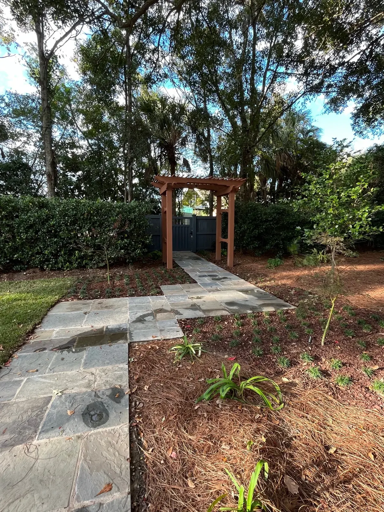
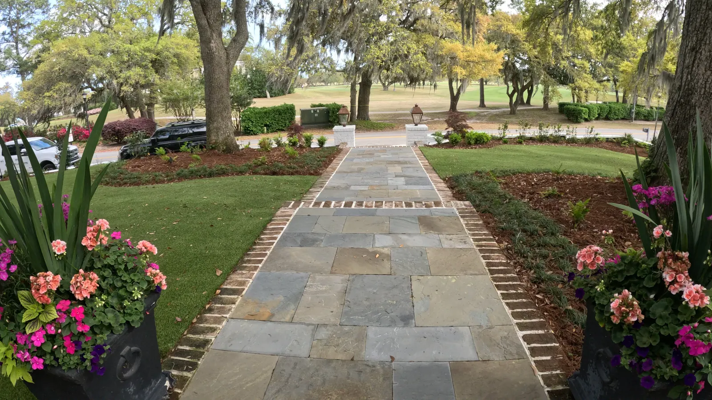
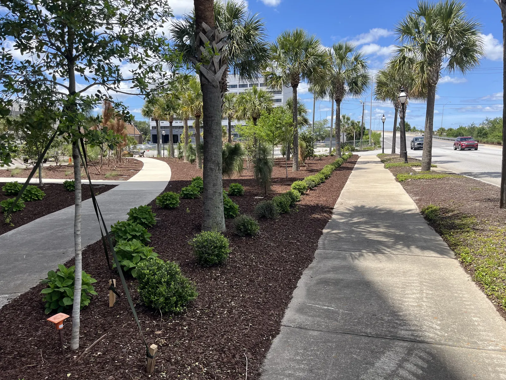
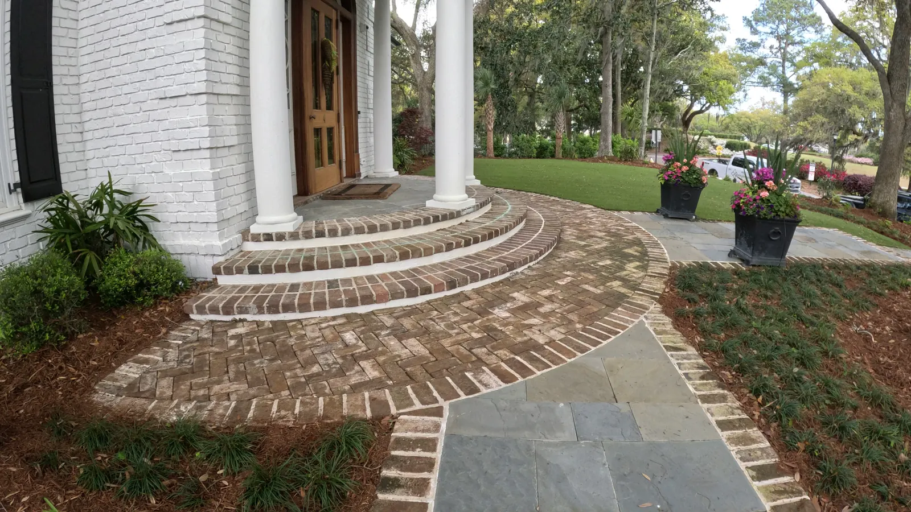
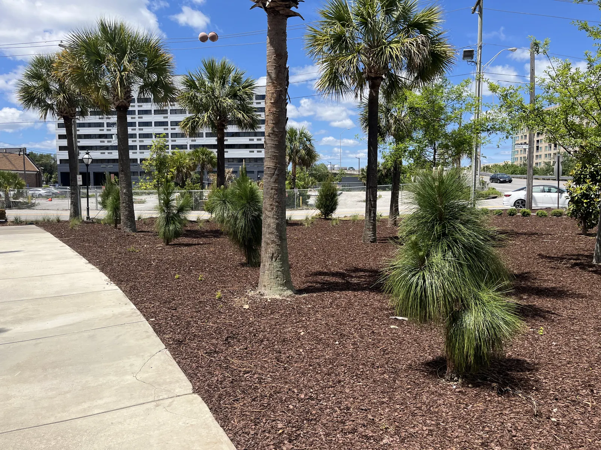
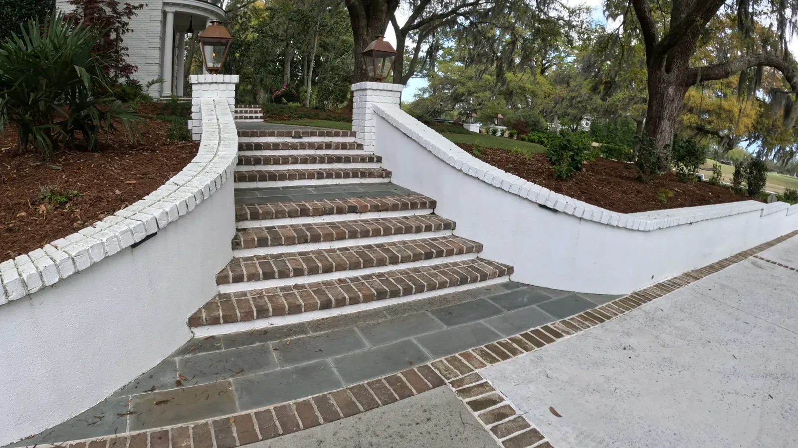

Landscape Design and Enhancement in Charleston, SC

Landscape Design & Enhancements In Charleston, SC
At Cramers Landscaping, we believe your outdoor space should be an extension of your home—functional, inspiring, and tailored to your vision. Our landscape design and enhancement services help Charleston homeowners reimagine their properties with creativity, expertise, and precision execution.
Whether you want a full backyard transformation or a targeted upgrade to improve curb appeal, we blend beauty and durability in every element we touch.

Reimagine Your Outdoors with Expert Landscape Design
From concept to completion, our landscape design services are built around your needs and lifestyle. Every project begins with a custom design that considers sun exposure, soil type, drainage, use of space, and aesthetic goals.
Our design process includes:
- In-depth site evaluation and measurement
- Plant palette and layout tailored to Charleston’s climate
- Hardscape and structure integrations
- Elevation, grading, and drainage considerations
- Visual mockups or conceptual drawings for larger projects
We offer standalone design consultations or full design-build execution. We’re not here to sell you the most expensive option—we’re here to deliver the right solution.
Popular Landscape
Enhancements We Offer
If your yard needs a refresh—not a full overhaul—we offer targeted enhancements that elevate your existing landscape without starting from scratch.
Planting Bed Redesigns

Rejuvenate tired, overgrown beds with seasonal color, structured shrubs, and layered textures.
Mulch & Edging Installation

Fresh mulch and sharp bed edges create instant visual appeal and improve root zone moisture retention.
Tree & Shrub Upgrades

We replace underperforming plants with hardy, native alternatives for low-maintenance beauty.
Privacy Screening

Add layered hedges or ornamental trees to block noise, wind, or street views.
Entryway Enhancements

We create welcoming front yards with structured plantings, walkways, and lighting elements that make a great first impression.

Designed for Charleston’s Climate and Style
Charleston’s Lowcountry environment requires designs that account for:
- High humidity and seasonal storms
- Sandy and clay-heavy soil types
- Historic district design guidelines
- Native and drought-tolerant plants
- Southern coastal architecture
We use local knowledge and time-tested strategies to design with longevity in mind, ensuring your landscape matures beautifully over the years.
Ideal for These Project Types
We’ve completed landscape design and enhancements for:
Whether it’s a $2,500 upgrade or a $50,000 redesign, we treat every project with care and craftsmanship.
- Single-family homes
- Luxury rentals and vacation properties
- HOA common areas
- Commercial storefronts and offices
- New builds and additions
 Single-family homes
Single-family homes Luxury rentals and vacation properties
Luxury rentals and vacation properties HOA common areas
HOA common areas Commercial storefronts and offices
Commercial storefronts and offices New builds and additions
New builds and additions
Pair with These Core Services
Most clients who use our design team also work with us to implement their project using:
- Landscape Installation
- Hardscape Installation
- Drainage & Grading
- Irrigation Installation
We take the guesswork out of sourcing contractors by handling the design, materials, and installation all in-house.
Our Design Process
We approach every landscape installation project with a clear, proven process:
Initial Consultation

We meet onsite to understand your vision, challenges, and preferences.
Site Analysis

Measurements, soil type evaluation, sun/shade mapping, and photo documentation.
Concept Development

We build out plant palettes, layout zones, and structure integration ideas.
Approval & Estimate

You’ll receive a detailed plan with estimated costs and phasing options.
Installation

Our experienced crews bring your design to life with top-tier craftsmanship.


Why Clients Trust Our Design Team
- Licensed & Insured professionals
- Decades of experience in Charleston
- Responsive, honest communication
- Creative and cost-conscious solutions
- Start-to-finish project management
We treat your home like our own and believe in creating timeless spaces that look even better five years from now.
Service Area
We provide landscape design and enhancement services throughout:
Request a Free Landscape Consultation
Ready to Design the Outdoor Space You’ve Been Dreaming Of?
Whether you’re ready for a full outdoor transformation or want to enhance a few key areas, Cramers Landscaping is here to help.
Contact us today to schedule your design consultation and get started.